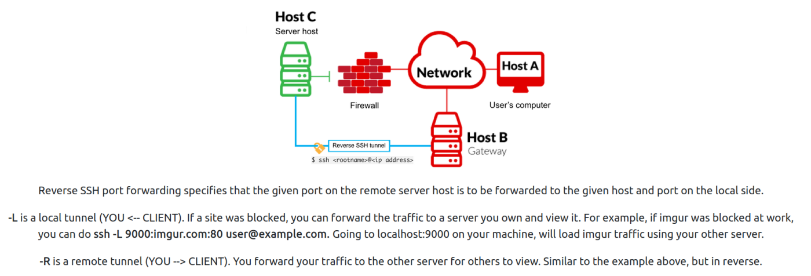
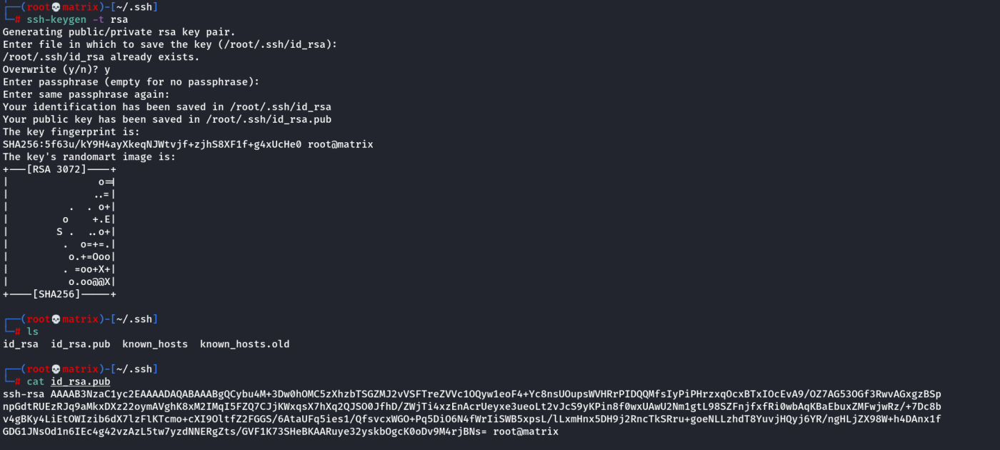

ssh
ssh connection with private id file.
Note: Change permission to 600.
chmod 600 id_rsa
ssh -i id_rsa user@Server_IP
Reverse SSH Tunnel

eg.
ssh -L 9999:localhost:10000 agent47@10.10.169.69
The CMS App is hosted in 10.10.169.69 and only accessible to localhost(own system). It is blocked by firewall for Remote Access.
However, using the above method we can access the CMS App remotely.
A reverse tunnel is created at Kali machine(Say at 9999)
Then the app running at localhost:10000 is tunneled to our machine.
SSH Backdoors Using Keys:
https://github.com/NinjaJc01/ssh-backdoor
Or
https://kb.iu.edu/d/aews
ssh-keygen -t rsa
Connect to SSH Backdoor created by the git repository:
Note:
ssh james@10.10.131.235 -p 2222
The above should work. But it fails in Kali Linux
The following command works. Here we are explicitly mentioning ssh-rsa as one of the supported HostKeyAlgorithms
ssh -o HostKeyAlgorithms\ ssh-rsa james@10.10.131.235 -p 2222
Secure Copy(SCP)
scp -r administrator@10.10.50.60:/Users/Administrator/Downloads /home/cybex/lab/Windows_tools
This will copy (recursively) all the contents inside C:\Users\Administrator\Downloads directory into the local directory mentioned above.
By default SCP uses C: drive in windows, so we need not mention it.
Generating SSH keys and sending public key to machines so that we can access them
